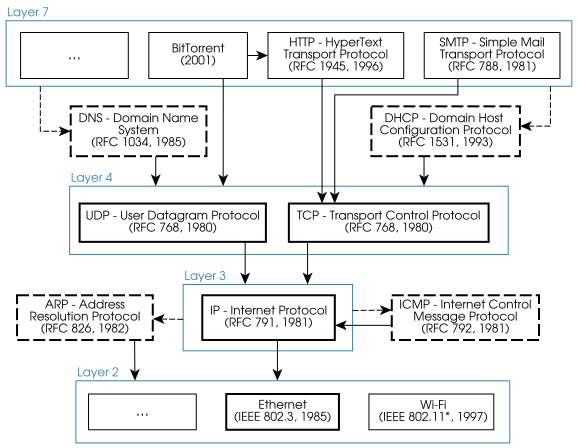

[6] The Internet¶
Modern communications are based on layered network stacks. Maybe you just downloaded this guide from the Internet. What layers are used exactly? What protocols are employed, and with what purpose? This chapter provides a primer to answer these questions.
The TCP/IP stack¶
The Internet is a practical solution to the problem of global computer communication, whose development started in the late 1960’s – early 1970’s, and is still ongoing.
Packet switching was conceived during the early 1960s, and the first wide-area implementation, ARPANET, began in 1969. A key challenge at the time was to interconnect existing networks, owned by different organizations, and based on different technologies and protocols. To make things viable, all the following requirements had to be met:
-
Existing networks should work without updates to the physical infrastructure or their protocols, just the way those protocols are used.
-
Existing networks should remain independently managed at the local level (autonomous internal organization).
-
Packets may not always be delivered, some are lost.
-
Messages that arrive may not be in order, and may be repeated.
The solution adopted by ARPANET –and later by the whole world– is the TCP/IP protocol suite, first described in 1974. It is a layered approach, designed to be “plugged-in” on top of existing LANs, with the goal of offering networking capabilities to all user applications.

In a nutshell, the main services offered by these layers are as follows:
-
(Physical): Send digital data through analog media.
-
(Network): Identify and communicate devices within the same LAN.
The term “Data Link” layer (from the OSI model) is sometimes used. -
(Internet): Identify and communicate devices across all LANs.
The term “Network” layer (also from OSI) is sometimes used. -
(Transport): Identify and communicate programs (services).
Also (choose only one):-
Make sure a stream of data successfully reaches the other end, and in order
– but an overhead is introduced and connections must be established (TCP). -
Use simple, relatively efficient messages, and have a small overhead
– but messages may be lost, reordered or duplicated (UDP).
-
-
(Application): Do anything the user might need.
Don’t forget about security (e.g., cryptography) or about efficiency (e.g., compression): Layers 4 and below don’t provide that.
TCP/IP protocol overview¶
Multiple protocols are defined to implement the functionality of each layer. These definitions include the required packet format, the rules to exchange those packets and their semantics. These protocols must be understood as a system, in which each part has very specific tasks.
Some of the most relevant protocols to communications using the Internet are shown in the next figure. In it:
-
Solid arrows indicate a protocol being encapsulated in another. If the destination is a layer, one protocol within that layer must be used.
-
Dashed boxes indicate auxiliary protocols defined to help other function. Dashed arrows indicate what layer uses what auxiliary protocol.
-
Boxes with thicker lines indicate the protocols highlighted in this guide.

Exercise 6.1
We want to send the sentence “Sorry, I’ll be 5 minutes late” by email. Our email client will send those data using the SMTP protocol, which in turn uses TCP (part of Layer 4). Assuming SMTP uses headers in its PDU, how many headers will the corresponding Layer-2 PDU contain?
Exercise 6.2
Why do you think Layer 3 has only one protocol (two if you count IPv4 and IPv6 separately)?
Who is the Internet boss?¶
The Internet Engineering Task Force (IETF) was created in 1986 to develop and publish standards to be used in the Internet. Their main output are “Request for Comment” (RFC) documents, which contain complete technical descriptions of those standards.
These RFCs are created by working groups of experts, for everyone to use freely and free of charge. Anyone can participate in these working groups, including researchers, governments and industry stakeholders. Decisions are made when 80-90% of the participants agree, so no single entity controls the standardization process.
Note
“We reject kings, presidents, and voting. We believe in rough consensus and running code” — Dave Clark (IETF), 1992.
See DOI 10.1109/MAHC.2006.42 for a short story of struggle for power.
RFCs standards are descriptive, not prescriptive. This means that nobody polices the correct use of these standards. Instead, manufacturers have the incentive to be compliant with the RFCs so that their products are compatible with others. The value of RFCs (and any other standard) is dependent on whether they are adopted by users. RFCs can be updated and retired for this reason.
TCP/IP protocols prevail because they are flexible and work reasonably well in most situations, even though they are not optimal in virtually any of them. Also, TCP/IP protocols are free, as opposed to privative protocols that forced the purchase of a specific vendor’s solution.
Note
Today it is hard to imagine a world not dominated by the TCP/IP architecture, but entirely different stacks were commercialized and supported until the late 90s. Examples include AppleTalk and IPX/SPX, by Apple and Novell, respectively.
Some aspects of TCP/IP like unique identifiers (including DNS, the Domain Name System) and reserved numbers need to be agreed upon by everyone for the Internet to work properly. The IANA (Internet Assigned Numbers Authority) works in coordination with the IETF to define the appropriate RFCs.
Note
Since 2016, IANA is managed by a nonprofit multistakeholder organization (ICANN - Internet Corporation for Assigned Names and Numbers). Since 2004, the responsibility for regional domains (e.g., .cat, .fr, .es) is transferred to continent-level organizations called regional Internet Registries (RIRs).